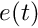
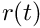
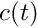
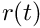
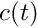
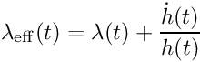
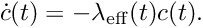
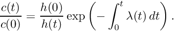
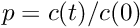
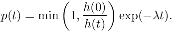

The scenario_t structure and associated subroutines. More...
Data Types | |
| type | scenario_t |
| Scenario data. More... | |
Functions/Subroutines | |
| subroutine | scenario_init_env_state (scenario, env_state, time) |
| Initialize the time-dependent contents of the environment. Thereafter scenario_update_env_state() should be used. More... | |
| subroutine | scenario_update_env_state (scenario, env_state, time) |
| Update time-dependent contents of the environment. scenario_init_env_state() should have been called at the start. More... | |
| subroutine | scenario_update_gas_state (scenario, delta_t, env_state, old_env_state, gas_data, gas_state) |
| Do gas emissions and background dilution. More... | |
| subroutine | scenario_update_aero_state (scenario, delta_t, env_state, old_env_state, aero_data, aero_state, n_emit, n_dil_in, n_dil_out, allow_doubling, allow_halving) |
| Do emissions and background dilution for a particle aerosol distribution. More... | |
| subroutine | scenario_update_aero_binned (scenario, delta_t, env_state, old_env_state, bin_grid, aero_data, aero_binned) |
| Do emissions and background dilution from the environment for a binned aerosol distribution. More... | |
| real(kind=dp) function | scenario_loss_rate (scenario, vol, density, aero_data, env_state) |
| Evaluate a loss rate function. More... | |
| real(kind=dp) function | scenario_loss_rate_dry_dep (vol, density, aero_data, env_state) |
Compute and return the dry deposition rate for a given particle. All equations used here are written in detail in the file doc/deposition/deposition.tex. More... | |
| real(kind=dp) function | scenario_loss_rate_max (scenario, vol, aero_data, env_state) |
| Compute and return the max loss rate function for a given volume. More... | |
| subroutine | scenario_loss_rate_bin_max (scenario, bin_grid, aero_data, env_state, loss_max) |
| Compute an upper bound on the maximum kernel value for each bin. Value over_scale is multiplied to the maximum sampled value to get the upper bound. A tighter bound may be reached if over_scale is smaller, but that also risks falling below a kernel value. More... | |
| subroutine | scenario_particle_loss (scenario, delta_t, aero_data, aero_state, env_state) |
Performs stochastic particle loss for one time-step. If a particle i_part has a scenario_loss_rate() value of rate, then the probability p will be removed by this function is 1 - exp(-delta_t*rate). Uses an accept-reject algorithm for efficiency, in which a particle is first sampled with rate 1 - exp(-delta_t*over_rate) and then accepted with rate (1 - exp(-delta_t*rate))/(1 - exp(-delta_t*over_rate)). More... | |
| subroutine | scenario_try_single_particle_loss (scenario, delta_t, aero_data, aero_state, env_state, i_part, over_prob) |
| Test a candidate particle to see if it should be removed, and remove if necessary. Particle is removed with probability (1d0 - exp(-delta_t*rate))/over_prob, where rate is the loss function evaluated for the given particle. More... | |
| elemental logical function | scenario_contains_aero_mode_type (scenario, aero_mode_type) |
| Whether any of the contained aerosol modes are of the given type. More... | |
| integer function | pmc_mpi_pack_size_scenario (val) |
| Determines the number of bytes required to pack the given value. More... | |
| subroutine | pmc_mpi_pack_scenario (buffer, position, val) |
| Packs the given value into the buffer, advancing position. More... | |
| subroutine | pmc_mpi_unpack_scenario (buffer, position, val) |
| Unpacks the given value from the buffer, advancing position. More... | |
Variables | |
| integer, parameter | scenario_loss_function_invalid = 0 |
| Type code for an undefined or invalid loss function. More... | |
| integer, parameter | scenario_loss_function_none = 1 |
| Type code for a zero loss function. More... | |
| integer, parameter | scenario_loss_function_constant = 2 |
| Type code for a constant loss function. More... | |
| integer, parameter | scenario_loss_function_volume = 3 |
| Type code for a loss rate function proportional to particle volume. More... | |
| integer, parameter | scenario_loss_function_drydep = 4 |
| Type code for a loss rate function based on dry deposition. More... | |
| integer, parameter | scenario_loss_function_chamber = 5 |
| Type code for a loss rate function for chamber experiments. More... | |
| real(kind=dp), parameter | scenario_loss_alg_threshold = 1.0d0 |
| Parameter to switch between algorithms for particle loss. A value of 0 will always use the naive algorithm, and a value of 1 will always use the accept-reject algorithm. More... | |
Detailed Description
The scenario_t structure and associated subroutines.
Function/Subroutine Documentation
◆ pmc_mpi_pack_scenario()
| subroutine pmc_scenario::pmc_mpi_pack_scenario | ( | character, dimension(:), intent(inout) | buffer, |
| integer, intent(inout) | position, | ||
| type(scenario_t), intent(in) | val | ||
| ) |
Packs the given value into the buffer, advancing position.
- Parameters
-
[in,out] buffer Memory buffer. [in,out] position Current buffer position. [in] val Value to pack.
Definition at line 1062 of file scenario.F90.
◆ pmc_mpi_pack_size_scenario()
| integer function pmc_scenario::pmc_mpi_pack_size_scenario | ( | type(scenario_t), intent(in) | val | ) |
Determines the number of bytes required to pack the given value.
- Parameters
-
[in] val Value to pack.
Definition at line 1006 of file scenario.F90.
◆ pmc_mpi_unpack_scenario()
| subroutine pmc_scenario::pmc_mpi_unpack_scenario | ( | character, dimension(:), intent(inout) | buffer, |
| integer, intent(inout) | position, | ||
| type(scenario_t), intent(inout) | val | ||
| ) |
Unpacks the given value from the buffer, advancing position.
- Parameters
-
[in,out] buffer Memory buffer. [in,out] position Current buffer position. [in,out] val Value to pack.
Definition at line 1121 of file scenario.F90.
◆ scenario_contains_aero_mode_type()
| elemental logical function pmc_scenario::scenario_contains_aero_mode_type | ( | type(scenario_t), intent(in) | scenario, |
| integer, intent(in) | aero_mode_type | ||
| ) |
Whether any of the contained aerosol modes are of the given type.
- Parameters
-
[in] scenario Scenario data. [in] aero_mode_type Aerosol mode type to test for.
Definition at line 752 of file scenario.F90.
◆ scenario_init_env_state()
| subroutine pmc_scenario::scenario_init_env_state | ( | type(scenario_t), intent(in) | scenario, |
| type(env_state_t), intent(inout) | env_state, | ||
| real(kind=dp), intent(in) | time | ||
| ) |
Initialize the time-dependent contents of the environment. Thereafter scenario_update_env_state() should be used.
- Parameters
-
[in] scenario Scenario data. [in,out] env_state Environment state to update. [in] time Current time (s).
Definition at line 110 of file scenario.F90.
◆ scenario_loss_rate()
| real(kind=dp) function pmc_scenario::scenario_loss_rate | ( | type(scenario_t), intent(in) | scenario, |
| real(kind=dp), intent(in) | vol, | ||
| real(kind=dp), intent(in) | density, | ||
| type(aero_data_t), intent(in) | aero_data, | ||
| type(env_state_t), intent(in) | env_state | ||
| ) |
Evaluate a loss rate function.
- Parameters
-
[in] scenario Scenario data. [in] vol Volume of particle (m^3). [in] density Density of particle (kg/m^3). [in] aero_data Aerosol data. [in] env_state Environment state.
Definition at line 398 of file scenario.F90.
◆ scenario_loss_rate_bin_max()
| subroutine pmc_scenario::scenario_loss_rate_bin_max | ( | type(scenario_t), intent(in) | scenario, |
| type(bin_grid_t), intent(in) | bin_grid, | ||
| type(aero_data_t), intent(in) | aero_data, | ||
| type(env_state_t), intent(in) | env_state, | ||
| real(kind=dp), dimension(bin_grid_size(bin_grid)), intent(out) | loss_max | ||
| ) |
Compute an upper bound on the maximum kernel value for each bin. Value over_scale is multiplied to the maximum sampled value to get the upper bound. A tighter bound may be reached if over_scale is smaller, but that also risks falling below a kernel value.
- Parameters
-
[in] scenario Scenario data. [in] bin_grid Bin_grid. [in] aero_data Aerosol data. [in] env_state Environment state. [out] loss_max Maximum loss vals.
Number of sample points per bin.
Over-estimation scale factor parameter.
Definition at line 580 of file scenario.F90.
◆ scenario_loss_rate_dry_dep()
| real(kind=dp) function pmc_scenario::scenario_loss_rate_dry_dep | ( | real(kind=dp), intent(in) | vol, |
| real(kind=dp), intent(in) | density, | ||
| type(aero_data_t), intent(in) | aero_data, | ||
| type(env_state_t), intent(in) | env_state | ||
| ) |
Compute and return the dry deposition rate for a given particle. All equations used here are written in detail in the file doc/deposition/deposition.tex.
- Parameters
-
[in] vol Particle volume (m^3). [in] density Particle density (kg m^-3). [in] aero_data Aerosol data. [in] env_state Environment state.
Definition at line 444 of file scenario.F90.
◆ scenario_loss_rate_max()
| real(kind=dp) function pmc_scenario::scenario_loss_rate_max | ( | type(scenario_t), intent(in) | scenario, |
| real(kind=dp), intent(in) | vol, | ||
| type(aero_data_t), intent(in) | aero_data, | ||
| type(env_state_t), intent(in) | env_state | ||
| ) |
Compute and return the max loss rate function for a given volume.
- Parameters
-
[in] scenario Scenario data. [in] vol Particle volume (m^3). [in] aero_data Aerosol data. [in] env_state Environment state.
Number of density sample points.
Definition at line 543 of file scenario.F90.
◆ scenario_particle_loss()
| subroutine pmc_scenario::scenario_particle_loss | ( | type(scenario_t), intent(in) | scenario, |
| real(kind=dp), intent(in) | delta_t, | ||
| type(aero_data_t), intent(in) | aero_data, | ||
| type(aero_state_t), intent(inout) | aero_state, | ||
| type(env_state_t), intent(in) | env_state | ||
| ) |
Performs stochastic particle loss for one time-step. If a particle i_part has a scenario_loss_rate() value of rate, then the probability p will be removed by this function is 1 - exp(-delta_t*rate). Uses an accept-reject algorithm for efficiency, in which a particle is first sampled with rate 1 - exp(-delta_t*over_rate) and then accepted with rate (1 - exp(-delta_t*rate))/(1 - exp(-delta_t*over_rate)).
- Parameters
-
[in] scenario Scenario data. [in] delta_t Time increment to update over. [in] aero_data Aerosol data. [in,out] aero_state Aerosol state. [in] env_state Environment state.
Definition at line 626 of file scenario.F90.
◆ scenario_try_single_particle_loss()
| subroutine pmc_scenario::scenario_try_single_particle_loss | ( | type(scenario_t), intent(in) | scenario, |
| real(kind=dp), intent(in) | delta_t, | ||
| type(aero_data_t), intent(in) | aero_data, | ||
| type(aero_state_t), intent(inout) | aero_state, | ||
| type(env_state_t), intent(in) | env_state, | ||
| integer, intent(in) | i_part, | ||
| real(kind=dp), intent(in) | over_prob | ||
| ) |
Test a candidate particle to see if it should be removed, and remove if necessary. Particle is removed with probability (1d0 - exp(-delta_t*rate))/over_prob, where rate is the loss function evaluated for the given particle.
- Parameters
-
[in] scenario Scenario data. [in] delta_t Time increment to update over. [in] aero_data Aerosol data. [in,out] aero_state Aerosol state. [in] env_state Environment state. [in] i_part Index of particle to attempt removal [in] over_prob Overestimated removal probability used previously
Definition at line 711 of file scenario.F90.
◆ scenario_update_aero_binned()
| subroutine pmc_scenario::scenario_update_aero_binned | ( | type(scenario_t), intent(in) | scenario, |
| real(kind=dp), intent(in) | delta_t, | ||
| type(env_state_t), intent(in) | env_state, | ||
| type(env_state_t), intent(in) | old_env_state, | ||
| type(bin_grid_t), intent(in) | bin_grid, | ||
| type(aero_data_t), intent(in) | aero_data, | ||
| type(aero_binned_t), intent(inout) | aero_binned | ||
| ) |
Do emissions and background dilution from the environment for a binned aerosol distribution.
See scenario_update_gas_state() for a description of the model.
- Parameters
-
[in] scenario Scenario data. [in] delta_t Time increment to update over. [in] env_state Current environment. [in] old_env_state Previous environment. [in] bin_grid Bin grid. [in] aero_data Aero data values. [in,out] aero_binned Aero binned to update.
Definition at line 349 of file scenario.F90.
◆ scenario_update_aero_state()
| subroutine pmc_scenario::scenario_update_aero_state | ( | type(scenario_t), intent(in) | scenario, |
| real(kind=dp), intent(in) | delta_t, | ||
| type(env_state_t), intent(in) | env_state, | ||
| type(env_state_t), intent(in) | old_env_state, | ||
| type(aero_data_t), intent(in) | aero_data, | ||
| type(aero_state_t), intent(inout) | aero_state, | ||
| integer, intent(out) | n_emit, | ||
| integer, intent(out) | n_dil_in, | ||
| integer, intent(out) | n_dil_out, | ||
| logical, intent(in) | allow_doubling, | ||
| logical, intent(in) | allow_halving | ||
| ) |
Do emissions and background dilution for a particle aerosol distribution.
See scenario_update_gas_state() for a description of the model. We additionally scale the number concentration to account for temperature changes.
- Parameters
-
[in] scenario Scenario data. [in] delta_t Time increment to update over. [in] env_state Current environment. [in] old_env_state Previous environment. [in] aero_data Aero data values. [in,out] aero_state Aero state to update. [out] n_emit Number of emitted particles. [out] n_dil_in Number of diluted-in particles. [out] n_dil_out Number of diluted-out particles. [in] allow_doubling Whether to allow doubling of the population. [in] allow_halving Whether to allow halving of the population.
Definition at line 259 of file scenario.F90.
◆ scenario_update_env_state()
| subroutine pmc_scenario::scenario_update_env_state | ( | type(scenario_t), intent(in) | scenario, |
| type(env_state_t), intent(inout) | env_state, | ||
| real(kind=dp), intent(in) | time | ||
| ) |
Update time-dependent contents of the environment. scenario_init_env_state() should have been called at the start.
- Parameters
-
[in] scenario Scenario data. [in,out] env_state Environment state to update. [in] time Current time (s).
Ambient water vapor pressure (Pa).
Ambient pressure (Pa)
Ambient temperature (K)
Definition at line 133 of file scenario.F90.
◆ scenario_update_gas_state()
| subroutine pmc_scenario::scenario_update_gas_state | ( | type(scenario_t), intent(in) | scenario, |
| real(kind=dp), intent(in) | delta_t, | ||
| type(env_state_t), intent(in) | env_state, | ||
| type(env_state_t), intent(in) | old_env_state, | ||
| type(gas_data_t), intent(in) | gas_data, | ||
| type(gas_state_t), intent(inout) | gas_state | ||
| ) |
Do gas emissions and background dilution.
Emissions are given as an areal rate , and then divided by the current box height  to obtain a volume rate. There is also a dimensionless rate scaling . All input functions are asusumed constant over the timestep, so the concentration  change is given by
to obtain a volume rate. There is also a dimensionless rate scaling . All input functions are asusumed constant over the timestep, so the concentration  change is given by
![\[ c(t) = c(0) + \frac{r t}{h} e. \]](form_162.png)
We model dilution by considering a gas concentration in a box of height , subject to first-order dilution with a rate  . Then the effective dilution rate is
. Then the effective dilution rate is

and the evolution of is given by

Solving this with separation of variables gives

If we define  to be the remaining proportion of the initial concentration, and  to be the constant background concentration, then we have
to be the constant background concentration, then we have
![\[ c(t) = p(t) c(0) + (1 - p(t)) b. \]](form_168.png)
We assume constant  and we only do entrainment with increasing height , so we have
and we only do entrainment with increasing height , so we have

- Parameters
-
[in] scenario Scenario data. [in] delta_t Time increment to update over. [in] env_state Current environment. [in] old_env_state Previous environment. [in] gas_data Gas data values. [in,out] gas_state Gas state to update.
Definition at line 207 of file scenario.F90.
Variable Documentation
◆ scenario_loss_alg_threshold
| real(kind=dp), parameter pmc_scenario::scenario_loss_alg_threshold = 1.0d0 |
Parameter to switch between algorithms for particle loss. A value of 0 will always use the naive algorithm, and a value of 1 will always use the accept-reject algorithm.
Definition at line 41 of file scenario.F90.
◆ scenario_loss_function_chamber
| integer, parameter pmc_scenario::scenario_loss_function_chamber = 5 |
Type code for a loss rate function for chamber experiments.
Definition at line 36 of file scenario.F90.
◆ scenario_loss_function_constant
| integer, parameter pmc_scenario::scenario_loss_function_constant = 2 |
Type code for a constant loss function.
Definition at line 30 of file scenario.F90.
◆ scenario_loss_function_drydep
| integer, parameter pmc_scenario::scenario_loss_function_drydep = 4 |
Type code for a loss rate function based on dry deposition.
Definition at line 34 of file scenario.F90.
◆ scenario_loss_function_invalid
| integer, parameter pmc_scenario::scenario_loss_function_invalid = 0 |
Type code for an undefined or invalid loss function.
Definition at line 26 of file scenario.F90.
◆ scenario_loss_function_none
| integer, parameter pmc_scenario::scenario_loss_function_none = 1 |
Type code for a zero loss function.
Definition at line 28 of file scenario.F90.
◆ scenario_loss_function_volume
| integer, parameter pmc_scenario::scenario_loss_function_volume = 3 |
Type code for a loss rate function proportional to particle volume.
Definition at line 32 of file scenario.F90.